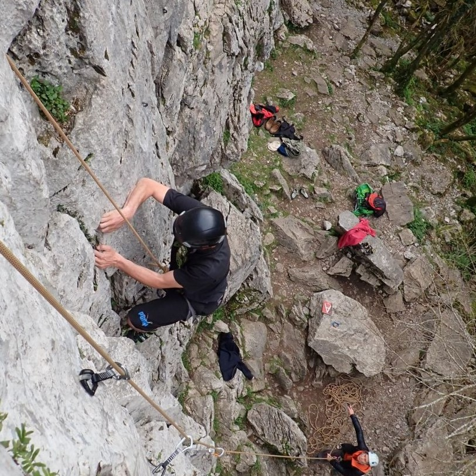
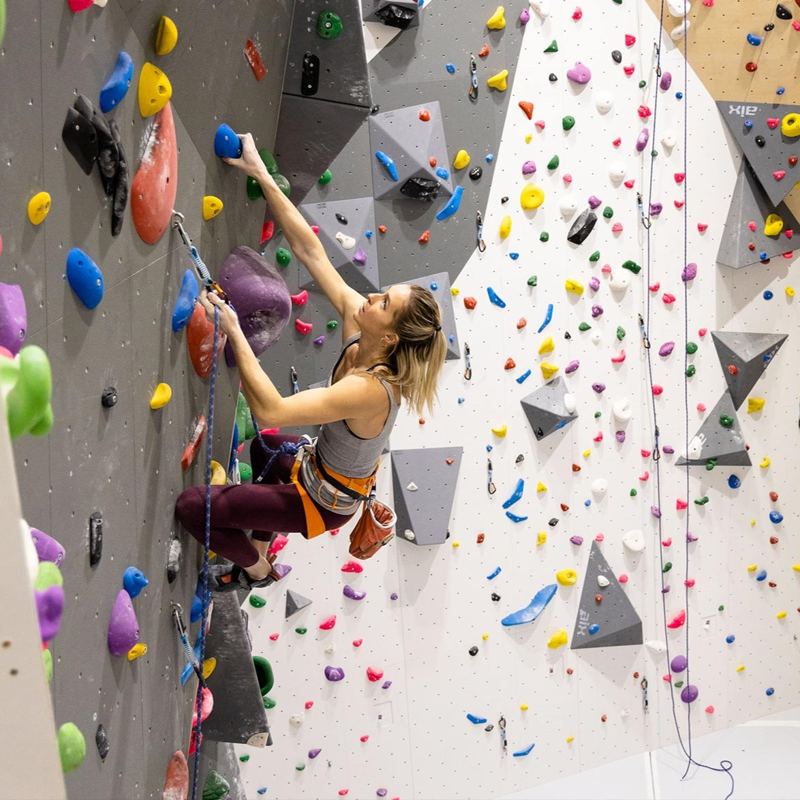
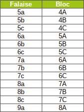

L'escalade est une dicipline qui consiste à traverser, passer des obstacles plus ou moins durs.

On peut pratiquer ce sport en interieur, dans des salles spécialisées, ou en exterieur, sur des falaises, grottes, etc...

Dans ce sport, il y a enormément de niveaux possibles, c'est pourquoi, une échelle de cotation a été inventée.

Les voies se voient attribuer un chiffre et une lettre,
un chiffre de 4 à 9 (4 étant le plus simple 9 le plus dur), et une lettre de A à C. Par exemple, les voies en 4A sont les plus simples et les 9c les plus dûres.
Le niveau est établi par les grimpeurs eux même, au fil de tests, plusieurs avis, des débats. C'est pourquoi une cotation peut changer au fil du temps.